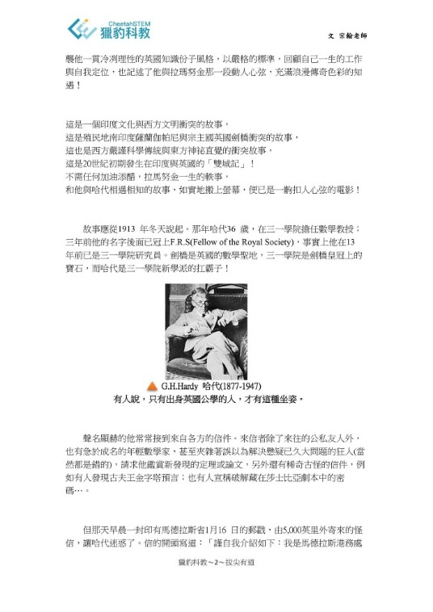
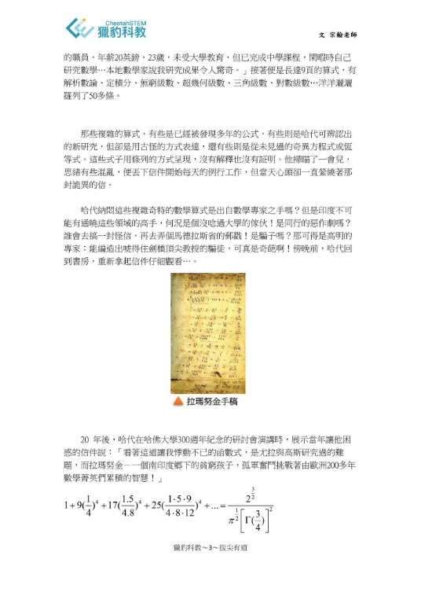
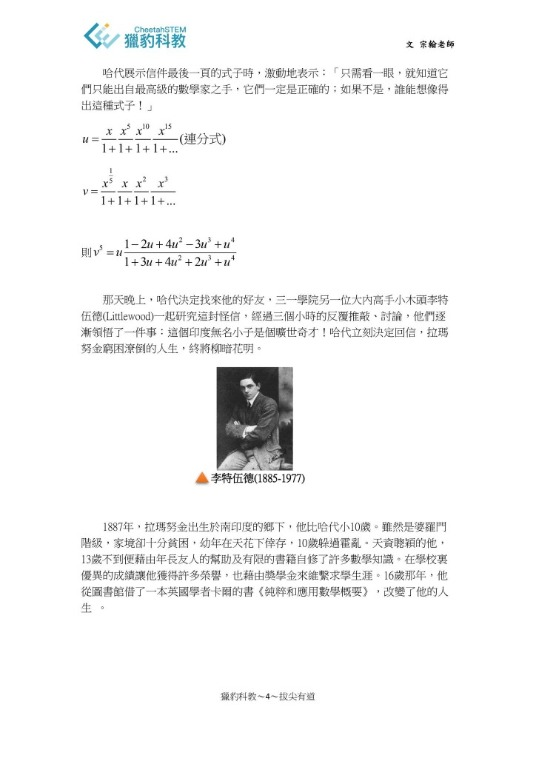
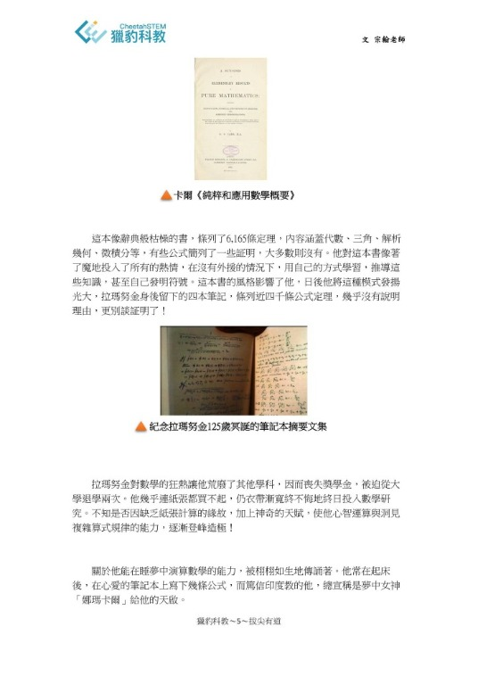
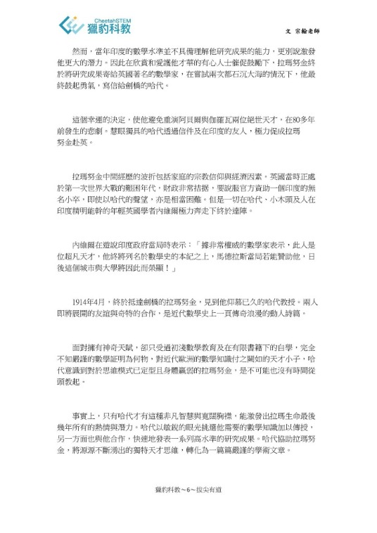
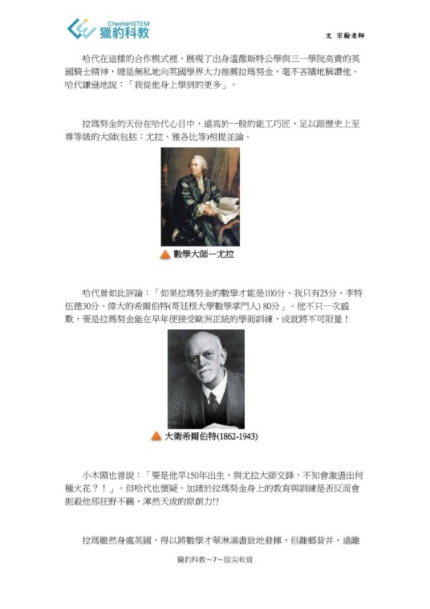

印度的千年傳奇——
拉瑪努金(上)
2022年12月22日是印度傳奇數學家「拉瑪努金」135歲冥誕，原本獵豹FB要發文紀念，但因活動宣傳等稿件已排定行程，所以只能延後至今。
2016上演的傳記電影The Man Who Knew Infinity（台譯：天才無限家）讓許多人第一次聽到「拉瑪努金」這號人物，但他的大名在數學界早已如雷灌耳，即使在天才輩出的學術圈，「拉瑪努金」傳奇也如神人一般地遙不可及。（我之前製作的數學動畫「連分數」，片尾的印度千年傳奇便是此人 https://www.facebook.com/....../permalink/1228557841430232/）
當年「天才無限家」在台灣上映時，片商請宗翰老師授課的機構協助電影宣傳，機構負責人便向宗翰老師邀文。宗翰老師參考電影原著「The Man Who Knew Infinity: A Life of the Genius Ramanujan」再綜合網路資料，改寫成這篇介紹文。
文章縱橫了主角的人生時空，精彩生動地描寫了拉瑪努金與哈代的知遇、印度與英國的衝撞，也概述了主角非凡的成就！非常值得一讀，歡迎師長推薦給孩子們。
因為文章有點長，我們分兩次刊出。
詳圖請點擊以下臉書連結：
https://www.facebook.com/groups/695697124716309/permalink/1244585556494127/






